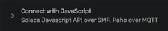

info_i
This tab shows the current state of the extension. You can see,
whether the extension is connected to Solace and ready to extract
messages from a queue.
error
This tab shows any errors that occured while using the extension.
settings
This tab enables you to configure the extension. You can add and
remove configurations for different Clusters.
On the plus
button, you can add a new empty configuration, that you can fill
with the necessary data.
You can either save all the credentials in a file, from where you can
copy them into the new configuration or you could copy all of them
directly and use Windows + V to paste them one by one. (Needs to be
activated first)
Cluster URL
Connection Details
Click on Cluster Manager on the left side
Then click on the cluster, you want to add credentials for. Click on
Open Broker Manager at the top right, or open the broker in any
other way (e.g. Manage/Queues)
You need to copy the URL starting from the beginning up to and
including the port (e.g :943). Right now the connection will fail,
if you include the slash after the port.
Click on Cluster Manager again and open the cluster, you want to add
credentials for. Click on Connect at the top
Then click on Connect with JavaScript.

After that click on "Solace JavaScript API" and a window on the
right side will appear. There you can find the VPN and the URL (URI)
you need. There are also some values for the Username and Password,
but they might not be correct. If that is the case, you can just use
your normal credentials that you have.